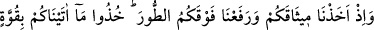
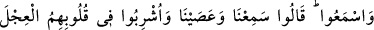
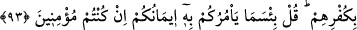

edildi ve: “Ey Muhammed, onlara de ki: “Niçin daha önce Allah’ın peygamberlerini
öldürüyordunuz?” buyuruldu. Burada söz ve inançlarıyla fiilleri arasında tenâkuz
bulunan yahûdîlere kınama ve azarlama vardır. Geçmiş hâli hikâye etmek için
“öldürüyordunuz” anlamında olmak üzere “öldürüyorsunuz” denildi. Bu cümle
mahzûf bir şart cümlesinin cevâbıdır. O da şöyle olur: “Ya Muhammed onlara de ki,
eğer iddiâ ettiğiniz gibi, inanıyor idiyseniz, hangi sebeble Tevrât’ın haram kıldığı bir iş
olan, peygamberlerinizi öldürüyordunuz?”
Aslında bu âyette hitâb edilenler, Benî İsrâîl’in asr-ı saâdetteki torunları olmayıp
kendileriydi. Böyle denmesinin sebebi babayla oğul arasındaki münâsebetten dolayıdır.
Ebu’l-Leys es-Semerkandî der ki: “Bu âyet, bir günahın işlenmesine râzı olan
kimsenin, o günahı işlemiş gibi olacağını gösterir. Çünkü yahûdîler babalarının yaptığı
cinâyeti doğru buluyorlardı. Bundan dolayı da Allah Teâlâ onlara “katiller” diye hitab
etti.”
“Eğer inanıyorsanız” bölümünün de cevâbı mahzûftur. Yâni “Eğer inanıyor idiyseniz
niçin öldürdünüz?” demektir. Bu âyette, azâbın muhakkak ve çok şiddetli olduğuna
beyân vardır.
92. Andolsun Mûsâ size apaçık mûcizeler getirmişti. Sonra onun ardından,
zâlimler olarak buzağıyı (tanrı) edindiniz.
( ) de ki ( ) harf-i yemînin cevâbıdır. Apaçık mûcizeler; asa, parlayan el ve
denizin yarılması gibi mûcizelerdir. ( ) harfi aradan bir süre geçtiğine ve yaptıkları
işin ne kadar kötü olduğuna işâret için gelmiştir. “Kendinize yazık ederek” bölümü
“siz” kısmından haldir. “İbâdeti yapmanız gereken yerden başka bir yere yaparak
buzağıya taptınız.” demektir.
93. Hatırlayın ki, Tûr dağının altında sizden söz almış: Size verdiklerimizi
kuvvetlice tutun, söylenenleri anlayın, demiştik. Onlar: İşittik ve isyan ettik,
dediler. İnkârları sebebiyle kalblerine buzağı sevgisi dolduruldu. De ki: Eğer